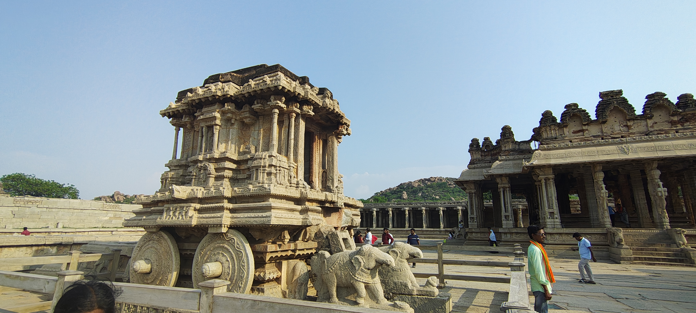
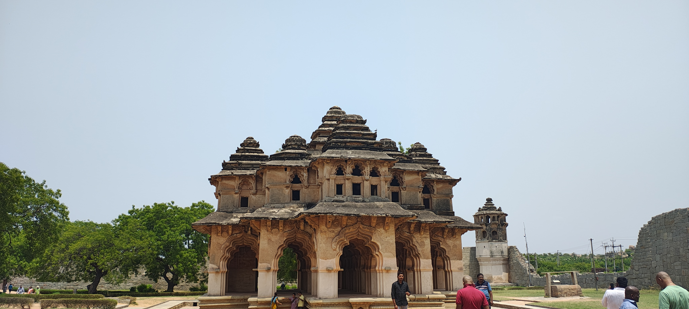
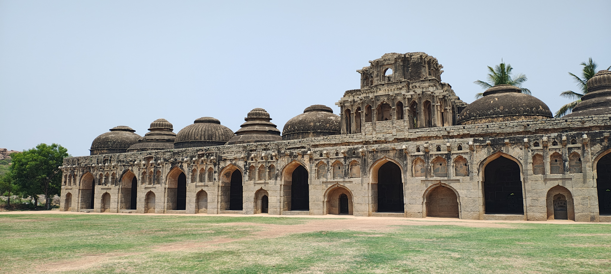

Key attractions of Hampi

Lakshmi Narasimha statue -
6.7-meter-tall, 16th-century monolithic masterpiece carved from a single granite block in 1528 during Krishnadevaraya's reign

Stone Chariot of Hampi - Built during the 16th century under the Vijayanagara Empire, this chariot is actually a shrine dedicated to Garuda, the celestial vehicle of Lord Vishnu.

Lotus Mahal - stunning two-storied, symmetrical structure located within the Zenana Enclosure

Elephant Stable -
a 15th-century, 85-meter-long oblong structure featuring 11 interconnected domed chambers, designed to shelter royal elephants of the Vijayanagara Empire
"the eye has not seen nor ear heard of any place resembling it upon the whole earth" - Abdul Razzaq (Persian Ambassador, 15th Century)
For planning a trip to Hampi, the best resources include
the official Karnataka Tourism website for itineraries,
the UNESCO World Heritage Centre for historical context,
and sites like Explore Hampi or On My Canvas for detailed guides
on attractions like Virupaksha Temple, Vitthala Temple, and local, offbeat experiences